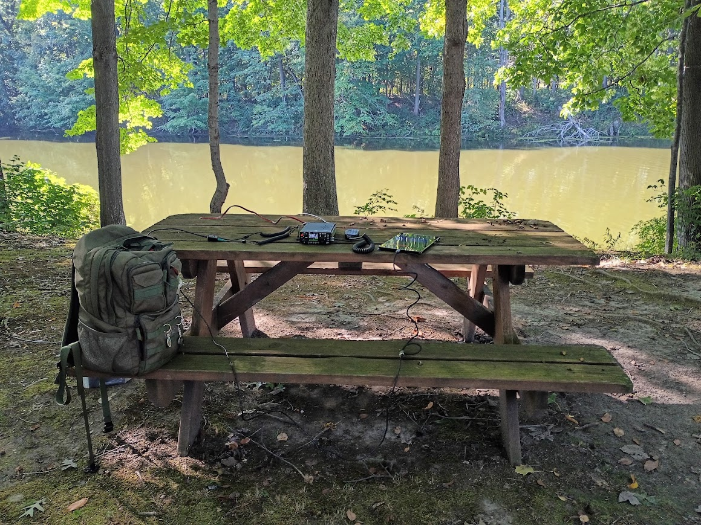
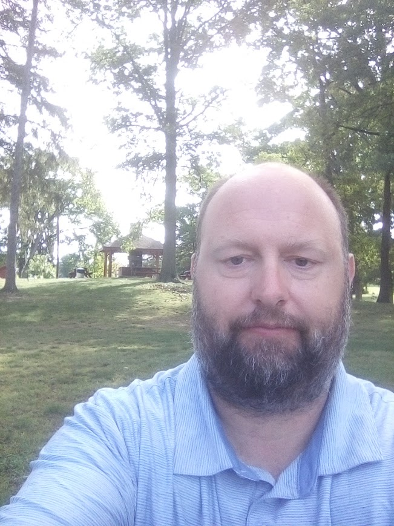
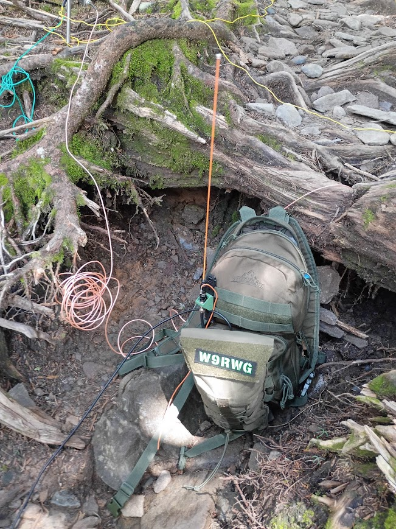
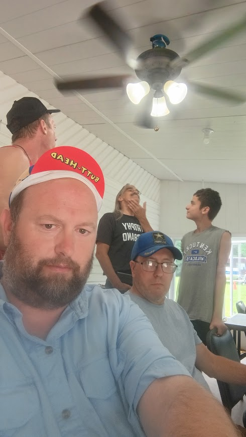
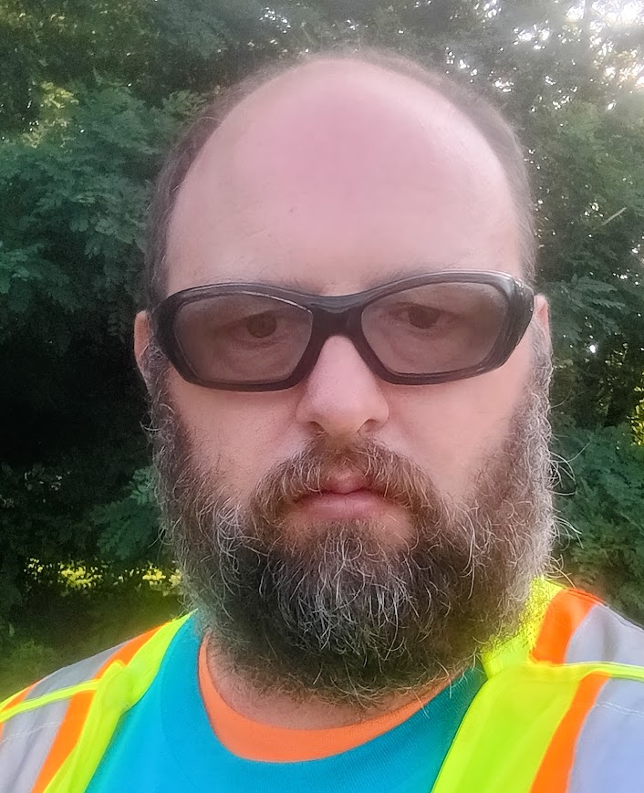

Portable Operations
HF, VHF and UHF operating from parks and other portable locations using compact radios, batteries and field antennas.
Radio, portable operating, experimentation, public service and adventures in amateur radio.
QRZ Profile About W9RWG Read the Blog
I'm Ron, W9RWG, an amateur radio operator in Indiana. Amateur radio for me is much more than operating from a radio room. I enjoy taking radio into the field, experimenting with equipment and antennas, participating in amateur radio activities, and using radio as part of public service.
W9RWG.com is my place to document those activities, projects and adventures in the hobby.
View W9RWG on QRZSome of the best amateur radio happens away from home.

Portable operating is a major part of my amateur radio activity. My operating takes me to parks, trails and other locations where a radio, battery, antenna and a little improvisation can put a station on the air.
Portable radio combines amateur radio with travel, outdoor activity, experimentation and the challenge of building an effective station with equipment you can carry.
Operating, experimenting and finding new ways to use radio.

HF, VHF and UHF operating from parks and other portable locations using compact radios, batteries and field antennas.
Antennas, APRS, digital modes, portable stations and other amateur radio projects and experiments.

Amateur radio is also about the people: clubs, field events, volunteer activities and sharing the hobby with others.

Amateur radio provides opportunities to support community events, emergency communications exercises and other volunteer activities.
Public service and communications preparedness are another important part of my involvement in amateur radio.
Stories, thoughts and experiences from portable operating, amateur radio projects, travels and adventures on the air.
Read the Blog